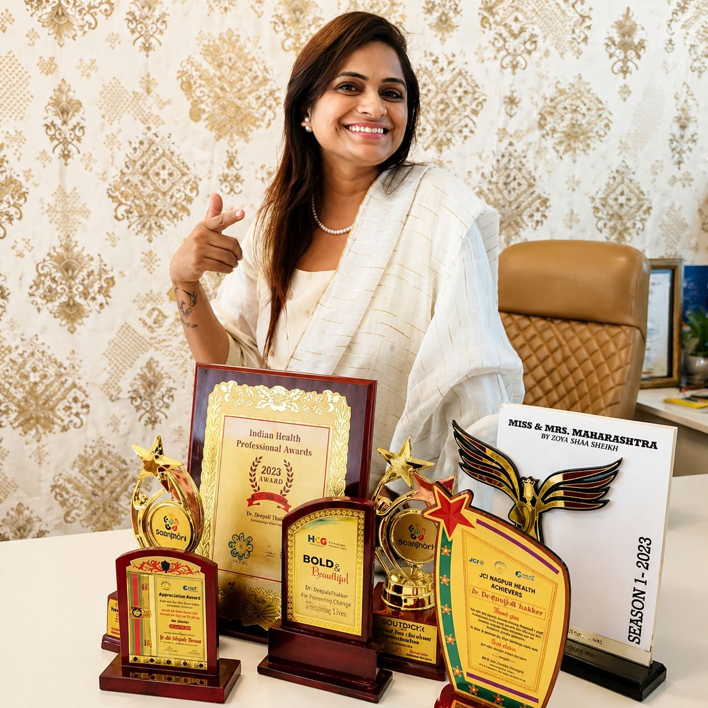

Meet the passionate individuals driving change at Sanskar Vikas Foundation.

Dr. Deepali Thakur is a qualified Dermatologist and the driving force behind Sanskar Vikas Foundation. Her deep-rooted commitment to community service led her to establish the foundation with the vision of providing holistic support to underprivileged communities.
As both a medical professional and a social entrepreneur, Dr. Thakur brings a unique blend of healthcare expertise and administrative acumen to the foundation. She personally conducts and oversees the health camps organized by the NGO, ensuring quality care reaches those who need it most.
Her leadership has been instrumental in establishing the foundation's presence across multiple districts of Maharashtra, building strong partnerships with government agencies, healthcare institutions, and community organizations.
Co-director of Sanskar Vikas Foundation, bringing administrative and strategic leadership to guide the organization's operations and governance.
We're always looking for passionate individuals who share our commitment to community development. Whether you're a healthcare professional, educator, or social worker — there's a place for you here.
Get In Touch →Flat No. 6, Shreeji Apartment, Tikekar Road, Dhantoli, Nagpur – 440012
F.R.N. 135772W | Partner: Nilesh Veged
A/c No.: 0265201012263
All transactions maintained with full transparency
Strong relationships with Panchayati Raj Institutions, CBOs, and various Maharashtra government departments for program implementation.